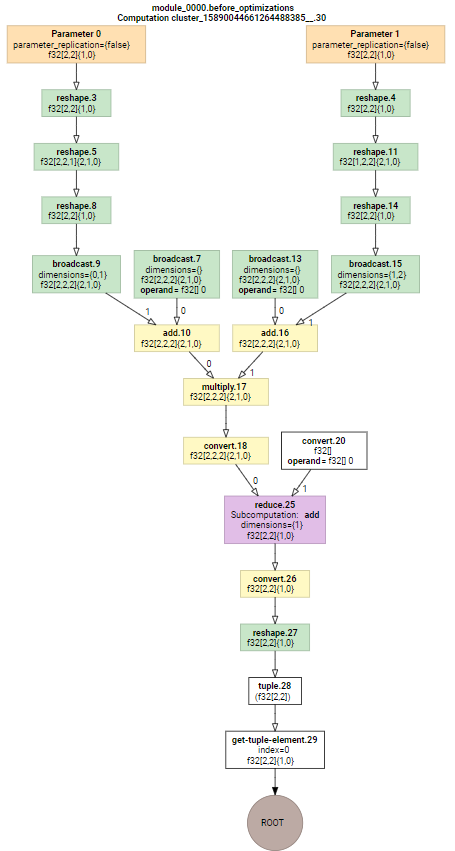
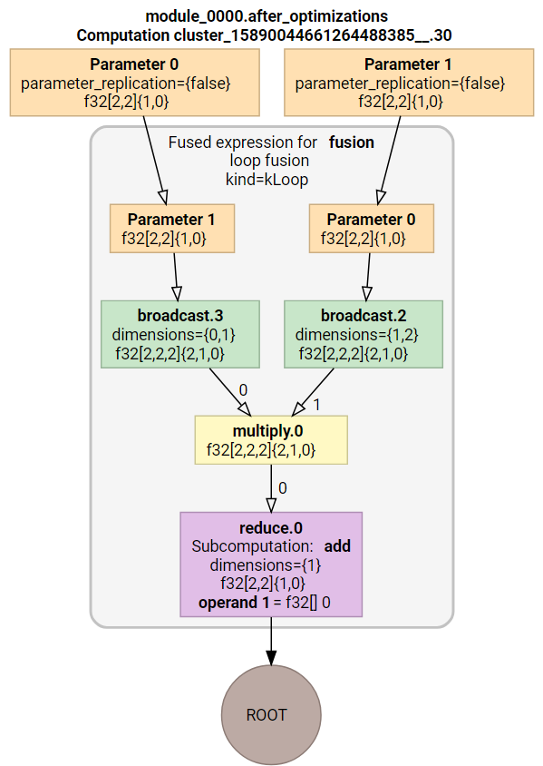
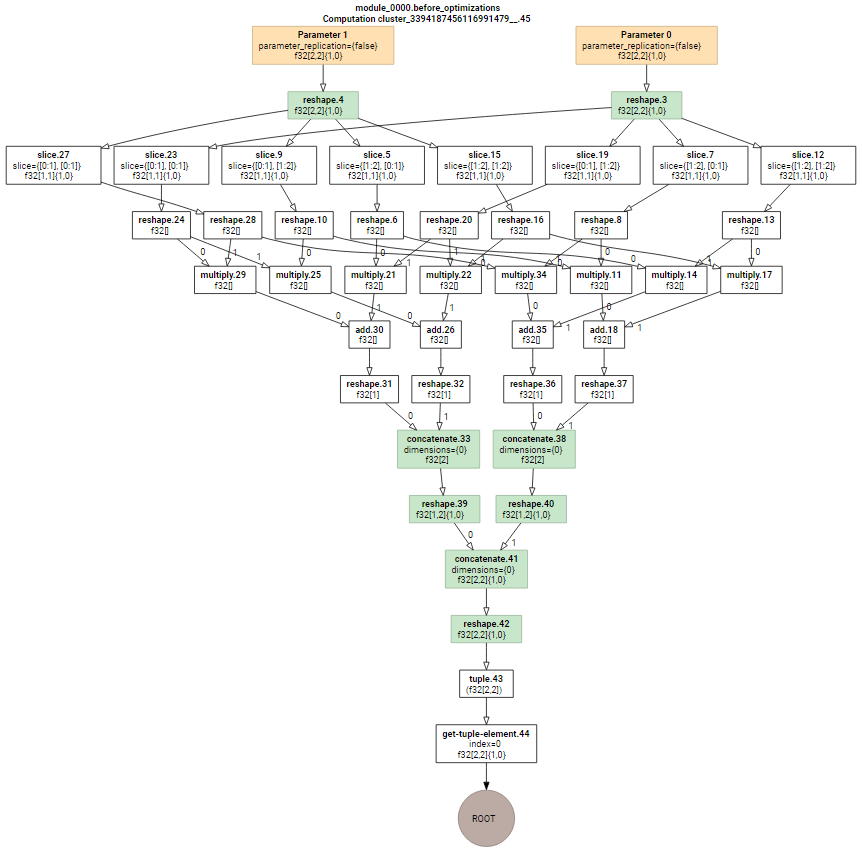
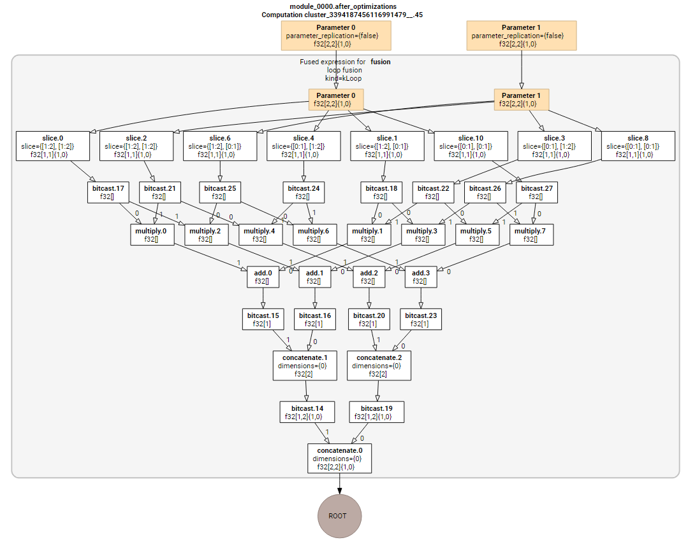

XLA 探究：矩阵乘法
1. 矩阵乘法
矩阵乘法是被广泛使用的算子，其数学表达式可以写为：
$$C(i, j) = \sum_{k=0}^{K-1}A(i, k) * B(k, j), 0 \le i < M, 0 \le j < N$$
最简单的实现方法为:
1 | for i in range(M): |
2. 在 Tensorflow 中定义矩阵乘法
Tensorflow中提供的线性代数和张量操作 API 允许对于一种计算有多种表达方式，推荐的方式往往是尽量利用已经存在的 API 原子性地表达一个运算，比如 tf.nn.conv2d, tf.linalg.matmul 等等，而不是将其拆开成多个操作。但是在深度学习网络的发展过程中，必然会有新的算子被提出，所以利用已有的运算拼凑新的运算是具有意义的。在本文里我们先尝试利用已有运算拼凑矩阵乘法，用来观测 XLA 对于拼凑出的运算（其实是计算图）会进行怎样的操作。
2.1 直接调用 matmul API
直接使用预设好的 API
1 | def gemm1(A, B): |
对于这种计算图，XLA 的优化在于消除冗余的 reshape 等节点。但优化前后都会调用 dot 这个运算 API 完成计算，dot 本身就在 HLO instruction 之中。
2.2 利用升维降维计算矩阵乘法
先将输入矩阵升维到三维，进行逐点相乘后再降维累加得到输出矩阵
1 | def gemm2(A, B): |
打印出 XLA 的 IR，首先看图形：
初始计算图中有很多冗余的reshape以及broadcast。

优化后的计算图简洁了很多。

再来对比文本形式的 HLO IR。
优化前的 IR：
1 | HloModule cluster_15890044661264488385__.30 |
优化后的 IR：
1 | HloModule cluster_15890044661264488385__.30 |
XLA 对图进行优化并没有将各个小运算合并用 dot 运算代替，因为对于一个编译器来说，识别当前做的运算是否能用更简洁的 API 代替是个复杂（甚至不知道是否可解）的问题。这种利用数学等价性进行更大胆的图替换的优化可能成为下一个要攻克的难点。
2.3 利用for循环计算矩阵乘
这种方法对 Tensorflow 是最具有挑战性的，因为我们直接用 for 循环完成计算，Tensorflow 前端将根据 for 循环的次数增加计算节点。
1 | def gemm3(A, B): |
先看优化前的计算图：

再看优化后的计算图：

计算图一下子就变得复杂了起来，那是因为 for 循环中的每次实例，都在向图中增加计算节点，这个图只是对于$2\times 2$矩阵乘法的，可以想象矩阵变大后图会有多复杂。事实上笔者在尝试$16\times 16$的矩阵乘时就无法正常可视化计算图了。$32 \times 32$以上的矩阵更是算不出来（因为处理计算图卡住）。
这种实现方式实在是难为 Tensorflow 了。因为 Tensorflow 的基本运算单位是张量，尽量将运算都定义在张量上，并构造一个静态的运算图是其基本出发点，而现在的实现方法是每个 scalar 运算都对应了一个节点，且节点数与输入规模相关，这样构造的计算图异常巨大，且不可扩展，不可迁移。XLA 更是无法试别这种计算图的计算模式，用一个简单的 dot 代替这些节点。
近期火热的深度学习编译器如 TVM 则是专门针对循环定义构建的，上面那种 for 循环形式的定义对于其是友好的，这也是 TVM 与 XLA 的不同之一。
3. 性能对比
上文介绍的三种实现方式具有不同的性能，第三种实现方式的性能不言而喻地低，因为基本的图构建都无法完成，所以就不列在比较之中了。
1 | gemm1: |
可以发现当矩阵大小超过512后，第二种方法产生了明现的劣势。这也体现了单独原子性地调用 API 的重要性。这可以抽象为一个划归问题，即准备好了许多高性能的运算实现（如cuDNN），但是具体的运算图如何划归到合适的运算 API 上是个问题，现在的图优化仅仅做了简单的算术化简以及算子合并，却不能发掘隐藏的激进的规约机会，就会错过优化机会。
4. 总结
本文旨在窥探 XLA 的优化能力边界，结合当前常见的新算子无原子性 API 支持时需要用已有 API 拼凑的场景，利用矩阵乘法作为一个例子，初步得出以下结论：
- XLA 的图优化很保守，至少难以发掘图上运算模式规约的可能性。当然，这也是所有目前的深度学习编译器面临的挑战。
- 单独调用一个 API 比拼凑 API 更具有优势。这本质体现了库支持问题。